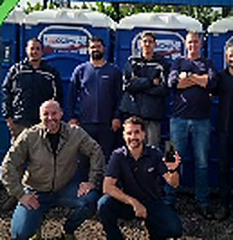
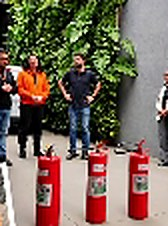

- Exames ocupacionais
- PCMSO, o programa de controle médico da empresa
- Laudos
- Direção técnica de médico do trabalho


Exames ocupacionais, gestão de riscos, treinamentos e assessoria para empresas de Cascavel e região.
Uma parceria para cuidar da saúde e da segurança de quem trabalha na sua empresa, com prevenção em primeiro lugar.
Riscos identificados e controlados antes de virarem acidente.
Programas, exames e informações ao eSocial de acordo com as normas.
Acompanhamento médico dos colaboradores, com direção técnica de médico do trabalho.
Saúde ocupacional e segurança do trabalho no mesmo lugar, da avaliação dos riscos às informações enviadas ao eSocial.


Imagens ilustrativas
01
Medicina do Trabalho
Exames ocupacionais e o programa de controle médico da empresa, sob direção técnica de médico do trabalho.
Falar com a GRO02
Segurança do Trabalho
Riscos identificados, avaliados e controlados, com a documentação que as normas exigem.
Falar com a GRO03
Treinamentos
Capacitações conforme as Normas Regulamentadoras, com prática: extintor na mão, manequim de primeiros socorros, simulação.
Falar com a GRO04
Assessoria e eSocial
Orientação contínua: eSocial, mudanças nas normas e apoio a quem cuida da rotina de pessoal.
Falar com a GRO
Um parceiro que conhece a rotina da sua empresa e fala a língua de quem decide.
Conversamos sobre a atividade da empresa, o número de colaboradores e o que está pendente.
Definimos os exames, programas e treinamentos necessários, com prazos claros.
Explicamos cada exigência e o que muda na rotina, em linguagem direta.
Seguimos ao lado da empresa nas atualizações das normas e nas dúvidas do dia a dia.
Conte a atividade da empresa e o número de colaboradores. A GRO indica por onde começar.
A legislação exige
PGR, PCMSO, LTCAT, exames ocupacionais e informações ao eSocial.
A GRO agrega
Orientação, prevenção, acompanhamento e conhecimento técnico.
Cada documento chega explicado, os riscos são mapeados antes do acidente e a equipe continua por perto depois da entrega, sob direção técnica de médico do trabalho.
A GRO Cascavel é especializada em saúde e segurança do trabalho. Reúne medicina ocupacional, gestão de riscos, treinamentos e assessoria para o eSocial em um só lugar, com foco em prevenção.
O atendimento é presencial, na Rua Maranhão, 539. O jeito de trabalhar é próximo: entender a rotina de cada empresa antes de propor qualquer coisa, e continuar por perto depois.


Imagens publicadas pela GRO no Instagram.
Normas, prevenção e rotina de SST. A GRO publica orientações sobre esses e outros assuntos no Instagram.
Conte o que a sua empresa precisa. A equipe da GRO indica o próximo passo.
Falar com a GROSegunda a sexta, das 7h30 às 17h30
Localização
Rua Maranhão, 539
Centro, Cascavel, Paraná, 85802-002
Atendimento e exames neste endereço, de segunda a sexta, das 7h30 às 17h30.
O mapa é carregado do Google Maps quando você clica.